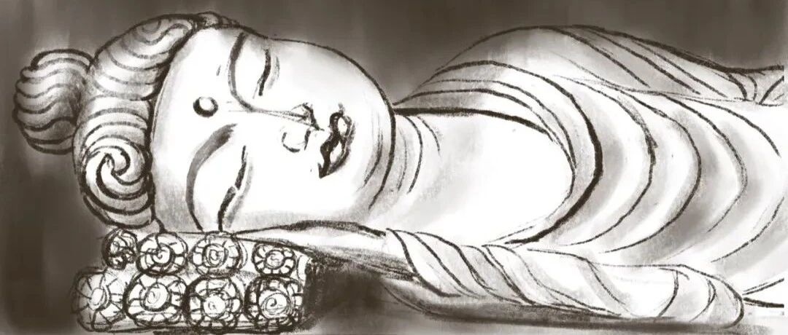

敦煌之旅。
原创
LCX
LCX
PaintingDiary
2022年09月12日 20:03
北京
在小说阅读器中沉浸阅读
中秋节三天小长假，我去了敦煌。
开玩笑滴，其实是去看了敦煌研究院与北京民生美术馆共同举办的敦煌艺术大展。
对于敦煌莫高窟的兴趣，来源于《河西走廊》这个纪录片。其实主要是对丝绸之路的兴趣，对七彩丹霞兴趣更浓，所以当时去西北旅行的时候，没有预约上莫高窟，也没有特别的遗憾。如今旅行这么困难的时候，能不出京，实现莫高窟之旅，我觉得已经很棒了。
虽然大多数的展品都是仿制的，但是确实能学到不少东西。
这就引出了另一个话题，如果展品都是仿制的，展览还值得去吗？
我觉得，可能也是值得的。如果单就展览的角度，这个敦煌艺术展做的还是很用心的，洞窟还原的非常逼真，讲解也非常细致，能学到不少佛教的知识，也能大概了解绵延千年的敦煌文化。
但是不得不承认，从大漠登上莫高窟和从城市中步入美术馆体验真滴差很多。如果是旅行，肯定是需要亲自去感受那种大漠风沙才行。如同修行的僧人，虔诚地穿过沙漠，在落日余晖中注视莫高窟，那是属于旅行的意义。而看展这种仔仔细细端详每个展品的行为，我猜想，如果是在真正的旅行中，是很难像这次一样把所有的讲解听完，拍照更是想都别想。可能这就是这种“复制品”大展的意义吧～
虽然没去过莫高窟，但是感觉洞窟还原的蛮好的，被强盗剥走的壁画、逐渐变色的壁画人物，佛像残缺的部分都非常逼真，沉浸感可以说非常强了。
就有一点，每个洞窟上面壁画的故事都差不多，描述的都是极乐世界的美好和各种佛经故事，重复度有点高，但还是都认真听完了。 说到这，让我想起了当时在佛罗伦萨参观乌菲兹美术馆的时候，大半个教堂都是圣母、耶稣的画像和雕塑，讲解还只有英文的，看得我和小伙伴频频打哈欠，走马灯似的看完了所有的圣母和耶稣之后，最后在一个家具的展厅终于找回了自己的脑子，开始认真地审美了起来。
这次的展览也略微有点那种感觉。。。虽然两个宗教的故事相差十万八千里，但是信徒对于宗教的信仰方式却十分相似，就是通过各种绘画或者雕塑，诠释自己的理解，表达自己的敬仰之情。还好这次的讲解生动很多，还有九色鹿、舍身饲虎等佛教故事穿插其中，题材重复度没有那么高。
展览当然也包含了藏经洞内发生的故事，即使已经听过很多次，但每次再听到还是非常愤怒。 这次展览包含的珍贵真品，大多是藏经洞内的经文，以各种字体写就，每一篇都非常工整。
其中对一篇经文的讲解也让我印象挺深刻的，字体有些像隶书，墨色浓黑有光泽，每个比划结束的位置都微微上翘，像小狗翘起的尾巴。讲解说，这是由于书写的速度快，横画起笔显露剑锋，收笔停顿，撇画收笔往往上翘，显得意态开张，灵动潇洒。 书画就是有这种传递作者性情和心境的神奇魔法。虽然抄写佛经时谨慎谦卑，心中饱含敬意，但浓浓的墨汁丝毫不阻笔锋的潇洒，狭小的乌丝栏也圈不住洒脱的性格，实属神奇。
不知道大家从小编的画中能不能感受到什么性情呢～
hhhh，算了，居然敢跟展品比，飘了飘了。
总之展览还是蛮值得一去的，就是展厅很冷，去的时候记得带外套～
好啦今天就到这，喜欢的旁友求一个转发、留言or"在看"呦～
最具禅意的加速视频在下面，欢迎点击观看～下回见～
修改于


 hhhh，算了，居然敢跟展品比，飘了飘了。hhhh，算了，居然敢跟展品比，飘了飘了。
hhhh，算了，居然敢跟展品比，飘了飘了。hhhh，算了，居然敢跟展品比，飘了飘了。